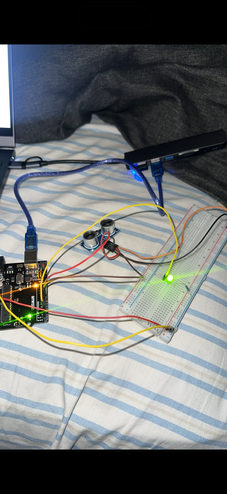
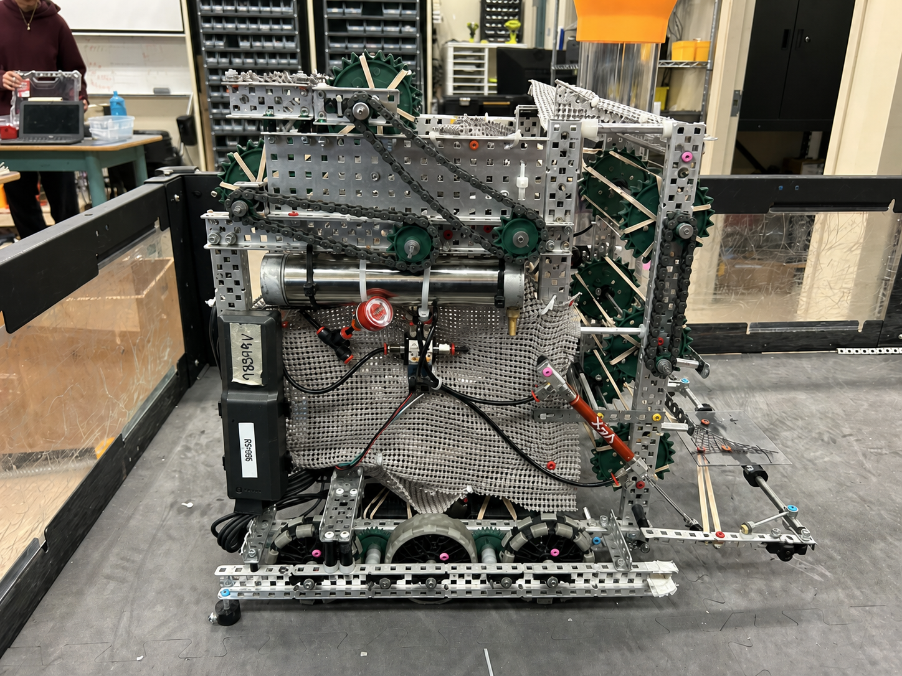
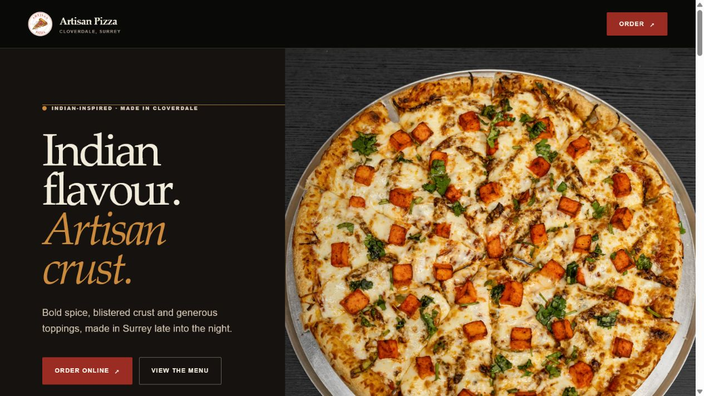
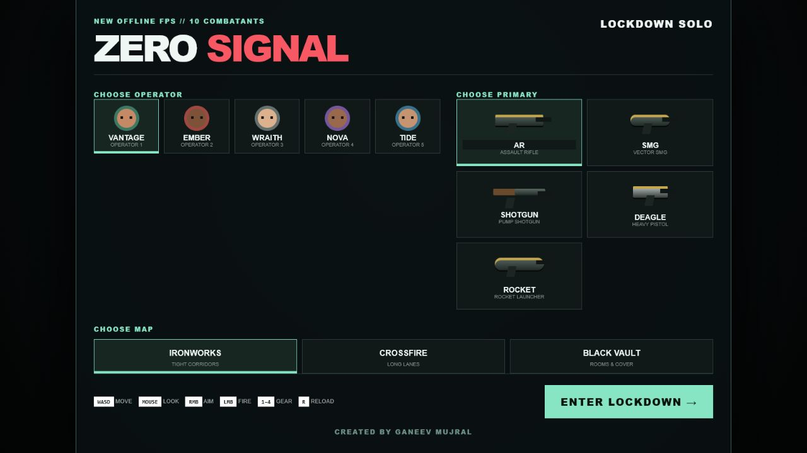

Youth Connect Events
Co-Founder & event organizerI co-founded Youth Connect Events and helped organize a charity auction and badminton tournament. Together, the events brought in more than 30 participants and raised over $1,500 for charity.
I’m Ganeev. I build things I want to use—from a reminder to sit back from my screen to websites for businesses in my neighbourhood.
A few things I’ve built, tested, and put into people’s hands.

01 / Hardware↗I wired an ultrasonic sensor to an LED so I could see when I was leaning too close to my monitor.

02 / Robotics↗Five events with VEX Team 98549E in 2025–26. After a team rebuild, our driver-skills score went from 19 to 30.

03 / Client websites↗Five websites for local businesses and youth entrepreneurs. I handle the design and build, with free work offered where applicable.

Six playable browser projects, with source code and build notes.
My screen habits gave me a reason to try electronics. Local businesses gave me a reason to learn web design. Teachers gave me a reason to turn physics into something you can experiment with. I’m interested in engineering because I want to keep doing that—with better tools and harder problems.
The roles I’ve taken on, and the work behind them.
I co-founded Youth Connect Events and helped organize a charity auction and badminton tournament. Together, the events brought in more than 30 participants and raised over $1,500 for charity.
I volunteered in the kitchen twice a week for three years. After six years learning harmonium, I taught harmonium and tabla to younger students for two years, free of charge. I play at religious gatherings and the darbar, and still return a few times a month to volunteer and help with turban-tying classes.
Since September 2021, I’ve volunteered two to three days a week. I coached free wrestling practices for three years and helped with four month-long summer camps and four week-long spring-break camps focused on gang awareness and a safe place for youth.
I volunteered at Run for Surrey and the Kids Play kabaddi tournament.
I joined as one of the squadron’s first cadets and started working with instructors within months. I taught classes, organized sports tournaments, earned my Introduction to Survival (ITS) certification, and reached Sergeant after two years. I also completed two years of poppy tagging for cadets, raising more than $250 during each session.
I tutored 13 students in chemistry, physics, and pre-calculus through paid and unpaid sessions. Their grades improved by an average of 18%.
I build interactive simulations for Physics 12 teachers at school. The labs cover momentum–energy, relative velocity, spacetime, gravity and light, momentum, impulse, and recoil—turning ideas from the board into something students can change and test.
I scorekept and helped run school-hosted sports games through REC Leadership, keeping track of play and helping events move smoothly for teams and spectators.
I help develop guidelines for AI use at school and discuss how it can fit into classroom learning.
I joined the Student Action Team for the 2026–27 school year.
Wrestling, school teams, and the sports I grew up playing.
I wrestled for five years and volunteered as a youth wrestling coach with Yo Bro Yo Girl for three years.
I played junior varsity volleyball for three years.
I swam for four years.
I played basketball for seven years in total: three years in club programs and four years outside club competition.
I played on my school’s rugby team during the 2024–25 season.
I also scorekeep and help with sports-event operations through REC Leadership, from 2023 to 2026.
French Immersion · Dual Dogwood Diploma
Expected June 2027
I’m completing the five-year secondary program in four years.
Principal’s List, Grades 10–11 · Honour Roll, Grades 8–10 · Waterloo Pascal Contest Distinction (top 25%).
Open to student opportunities, mentorship, and projects.